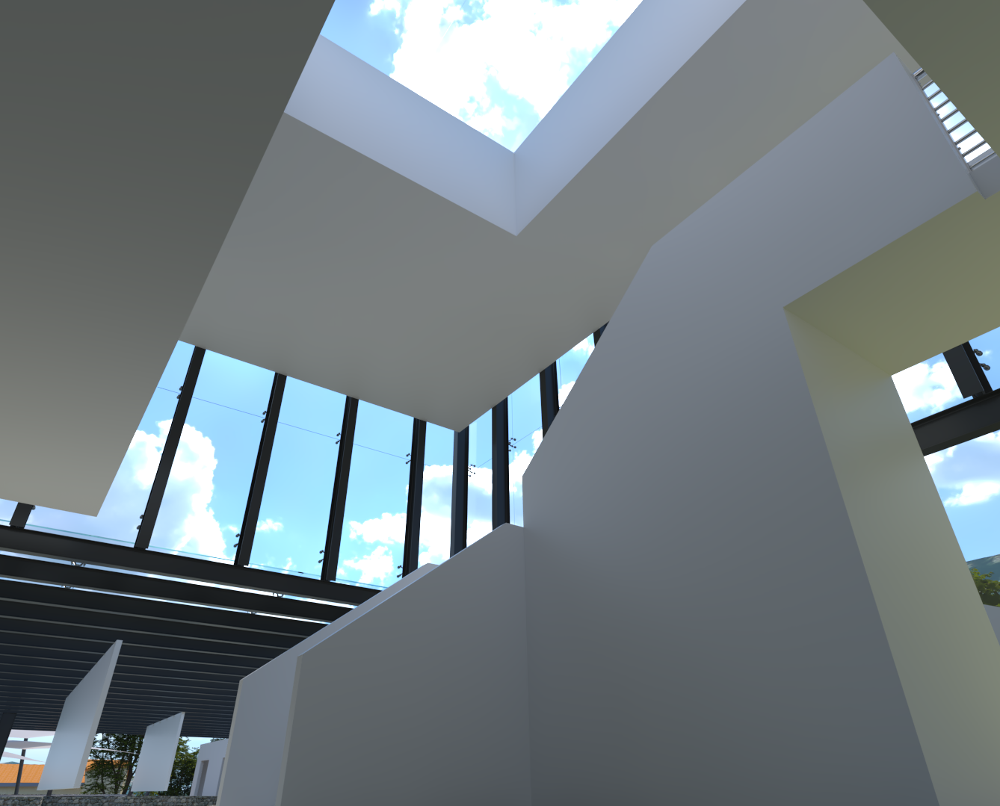

The Villavallelonga Heritage & Eco Tourism Centre
This project is based in the small town of Villavallelonga, Italy. The proposed goal was to design a Tourism and Heritage centre on top of an old church foundation. This location used to be the home of The Parish church of St. Nicholas. It was constructed in the 11th century but was unfortunately destroyed due to an earthquake in 1915 and was subsequently never rebuilt. Currently, the only remnants of the church are the foundation, floor, and a few artifacts.
Completed entirely on my own using SketchUp 2021. Rendered with Vray 5.
September - December 2023
Final Presentation Board